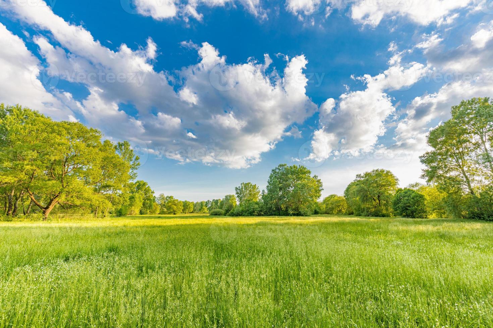
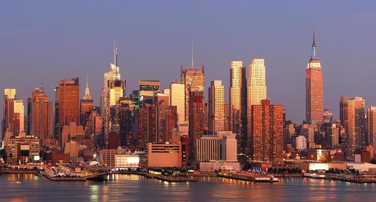

Festejando Conexões Campo Cidade
O concurso Agrinho celebra a união e a troca de experiências entre o campo e a cidade, com o objetivo de fortalecer a cultura, a educação e a sustentabilidade nas duas realidades. Vamos juntos celebrar essas conexões!

